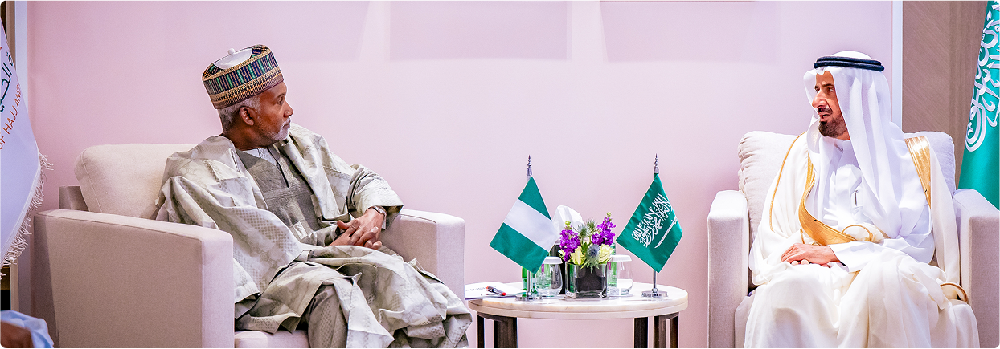

The Ministry of Foreign Affairs is the principal arm of Nigeria's foreign engagement — leading the nation's diplomatic missions and managing its international relations across every region of the world.
Established at independence in 1960, the Ministry has steered Nigeria's role in shaping the post-colonial African order, championing continental unity, and advancing the interests of Africa's most populous nation and largest economy in multilateral forums including the United Nations, the African Union and the Commonwealth of Nations.
Serving as the trusted bridge between Nigeria and the rest of the world — advancing our national interests with integrity, professionalism and purpose.
Today the Ministry oversees more than 100 diplomatic missions across five continents — embassies, high commissions, consulates and permanent missions — and provides consular services to Nigerians in the diaspora. Its work encompasses economic diplomacy, treaty obligations, citizen protection, document authentication and the formulation of Nigeria's foreign policy in coordination with the Presidency and other arms of government.

The Ministry of Foreign Affairs is the statutory facilitating organ of the Government charged with the primary responsibility of formulation, articulation, conduct, and execution of Nigeria's foreign policy.
To promote and protect Nigeria's national interests in the international arena, foster friendly relations and cooperation with other nations, and provide responsive, citizen-centred consular services to Nigerians at home and in the diaspora.
To be a world-class foreign service that effectively advances Nigeria's strategic interests, strengthens its standing as a leader in Africa, and contributes meaningfully to global peace, security and development.
The principles that guide every action, decision and relationship the Ministry undertakes on behalf of the Federal Republic of Nigeria.
We uphold responsibility in all our actions and decisions on behalf of the nation.
We reward excellence and competence, ensuring the best serve Nigeria's interests.
We conduct affairs with integrity and skill, meeting the highest diplomatic standards.
We are unwavering in our commitment to Nigeria's national interests above all else.
We deliver quality services with speed and precision, maximising every resource.
Nigeria's Ministry of Foreign Affairs traces its roots to the country's independence in 1960, when the conduct of external relations passed into Nigerian hands. Over more than six decades it has guided the nation's role in the United Nations, the African Union, ECOWAS and the Commonwealth, and has been served by a long line of distinguished Foreign Ministers.
The Ministry's work is carried out through a network of specialised departments — each dedicated to a core aspect of Nigeria's foreign service. Expand any section below to learn more.
At the apex of the Ministry's organogram, the OHMFA is the face of the Ministry and the first point of contact, shaping and executing Nigeria's foreign policy and ensuring its effective representation on the global stage.
Supports the Honourable Minister in policy formulation, diplomatic coordination and representation across the Ministry's priority engagements.
Provides administrative leadership and coordinates the day-to-day operations of the Ministry's departments and Nigeria's missions abroad.
Manages human resources, general services and the operational backbone that keeps the Ministry and its missions running.
Drives Nigeria's leadership in Africa — advancing integration through the African Union and ECOWAS and deepening bilateral ties across the continent.
Provides research, data and strategic analysis that inform the Ministry's policy decisions and long-term planning.
Protects Nigerians abroad through consular services and advises the Ministry on treaties and international legal obligations.
Leads Nigeria's economic diplomacy — promoting trade, attracting investment and opening markets for Nigerian goods and services.
Oversees the Ministry's budgeting, financial management and accountability across headquarters and missions worldwide.
Monitors performance, standards and compliance across the Ministry's departments and diplomatic missions.
Coordinates Nigeria's engagement with the United Nations and other multilateral bodies, advancing the nation's voice on global issues.
Manages diplomatic protocol, state visits and the ceremonial engagements that underpin Nigeria's international relations.
Manages Nigeria's bilateral relations across world regions, coordinating the network of embassies, high commissions and consulates.
The Ministry is led by the Honourable Minister of Foreign Affairs, supported by the Minister of State, the Permanent Secretary, Department Directors and Heads of Nigeria's Permanent Missions across the world. Together they steer the nation's diplomatic agenda and oversee its global network of embassies, high commissions and consulates.